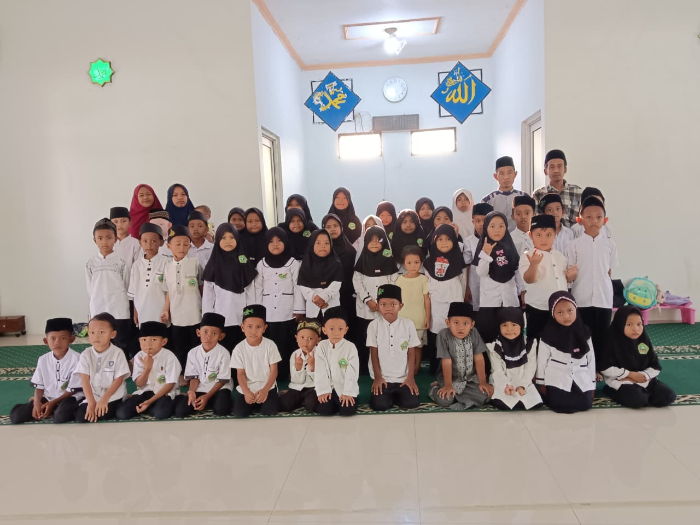
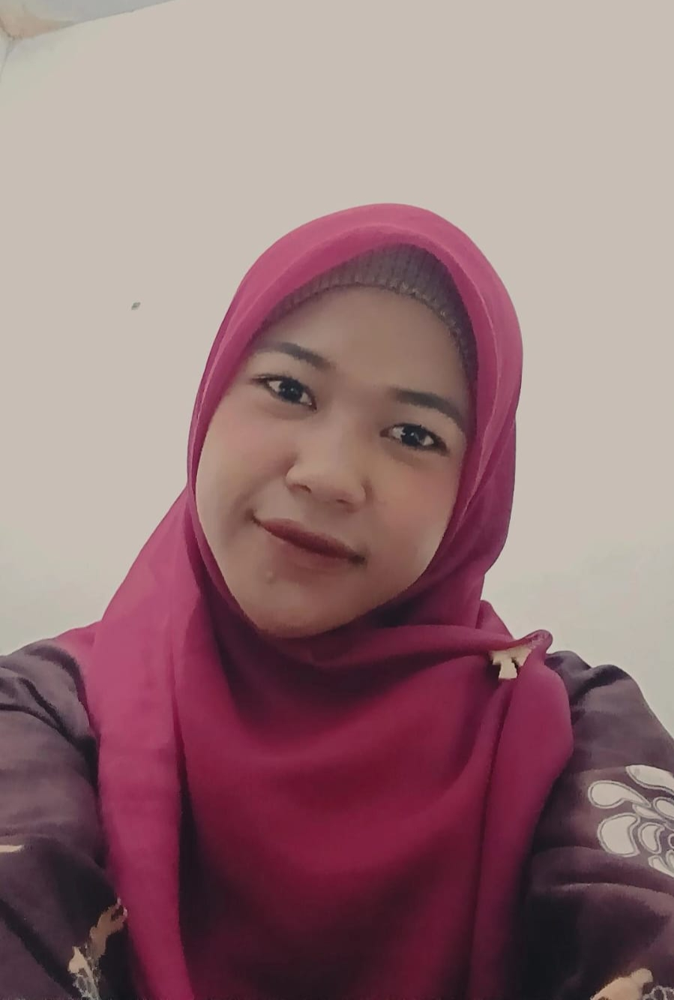
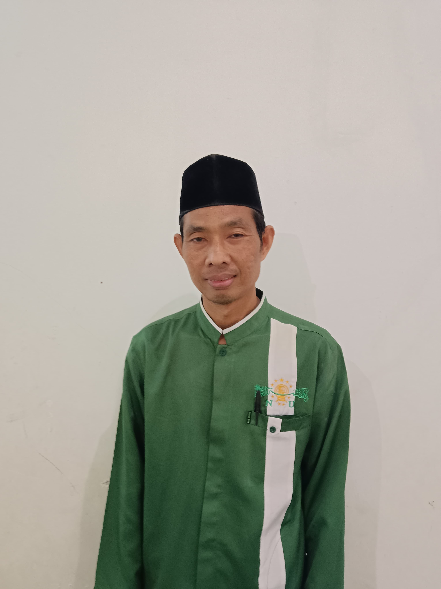
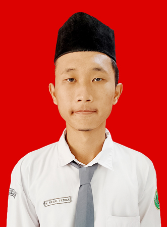
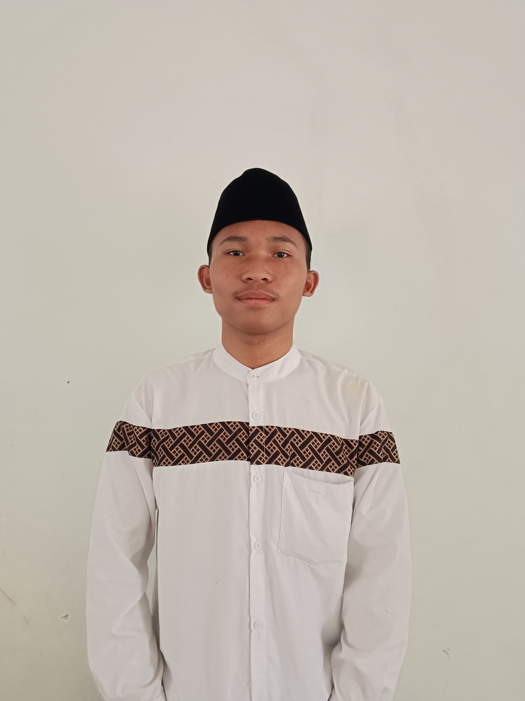
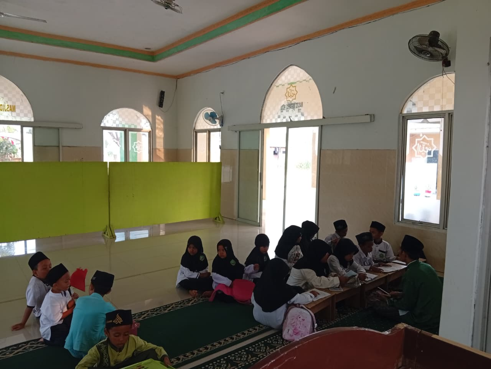
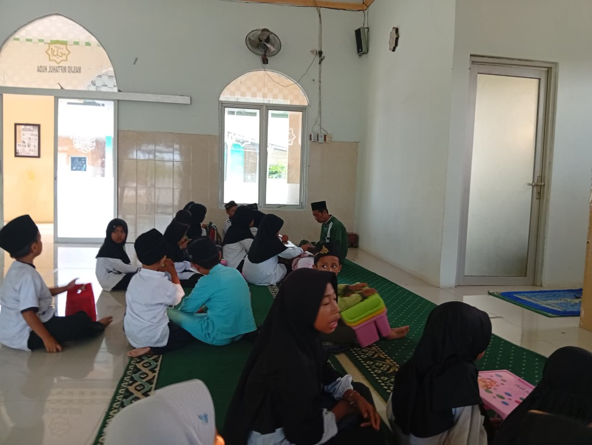
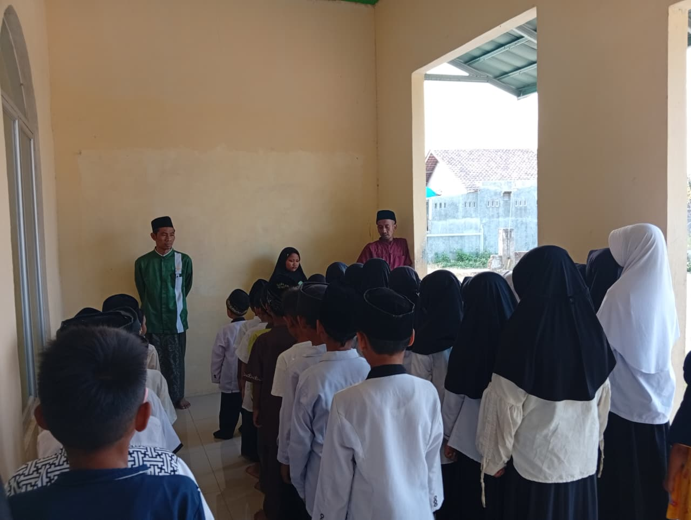
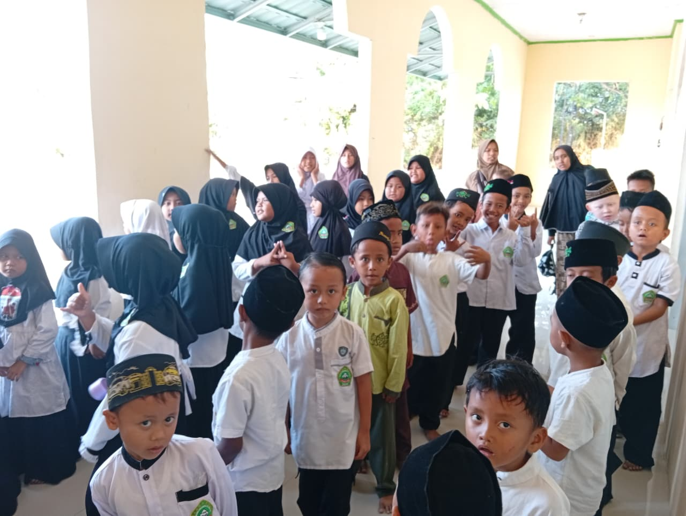

TPQ Miftahul Huda
Belajar membaca, menghafal, dan memahami Al-Qur'an dengan metode yang menyenangkan, dibimbing langsung oleh ustadz dan ustadzah berpengalaman.

Tentang Kami
TPQ Miftahul Huda didirikan sebagai wadah pendidikan Al-Qur'an untuk anak-anak di lingkungan sekitar, dengan kurikulum yang menggabungkan bacaan, hafalan, adab, dan akhlak sehari-hari.
Program Belajar
Pengenalan huruf hijaiyah dan cara pengucapan yang benar untuk santri pemula.
Melanjutkan ke bacaan Al-Qur'an dengan penerapan tajwid dasar.
Program hafalan juz 30 dan surat-surat pilihan secara bertahap.
Pembiasaan doa harian, adab, dan akhlak dalam kehidupan sehari-hari.
Jadwal Belajar
Setiap kelompok belajar sesuai jenjang, dengan durasi 90 menit per pertemuan.
Tenaga Pengajar




Galeri Kegiatan




Testimoni
"Anak saya jadi lebih semangat mengaji sejak ikut di sini. Ustadznya sabar sekali membimbing."
— Wali Santri, Kelompok Iqra
"Laporan perkembangan rutin diberikan setiap bulan, jadi kami tahu progres hafalan anak."
— Wali Santri, Kelompok Tahfidz
Pendaftaran Santri Baru
Pendaftaran dibuka untuk santri usia 5–12 tahun. Kuota terbatas per kelompok belajar.